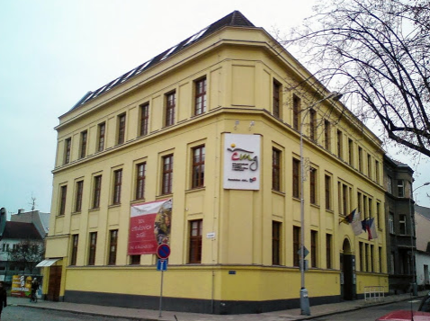

Cyrilometodějské gymnázium, základní škola a mateřská škola v Prostějově (CMG) je
církevní osmileté gymnázium, 2. stupeň základní školy a mateřská škola pro děti všech rodičů,
kterým záleží na kvalitním vzdělání a křesťanské výchově jejich dětí...
